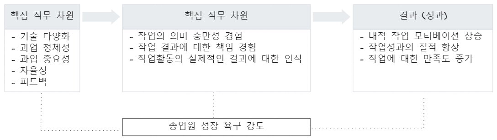

flowchart TB subgraph 가가[특성에 따른 분류] direction TB 나[거래적 계약] 다[관계적 계약] end subgraph 가나[의무 성격에 따른 분류] direction TB 라[안정적 계약] 마[발전적 계약] end 가[ㅤㅤ심리적 계약ㅤㅤ] --- 가가 & 가나
인력과 직무설계
인력 운영
심리적 계약
심리적 계약(psychological contract)이란 조직과 조직 구성원 간 상호 교환에 대한 암묵적인 의무와 기대 집합을 의미한다.1 즉, 계약 당사자는 상대방과 교환을 통해 자신이 어떠한 의무를 지고, 그에 따른 대가로 어떠한 것을 받을 권리가 있다고 믿는다. 이러한 계약이 형성되기 위해서는 계약 당사자 간 상호 기대감 내지 상호 의무감에 대한 조직 및 조직 구성원들 사이의 합의가 전제되어야 하며, 이러한 합의는 법적계약과 같이 명시적이기 보다 개인이 지각한 약속이나 합의(Perceived promise & agreement)에 근거한 암묵적인 형태를 띈다.
유형으로는 거래적 계약, 관계적 계약, 안정적 계약, 발전적 계약이 있다. 거래적 계약과 관계적 계약은 경제적 교환과 사회적 교환 개념을 빌린 유형이고, 안정적 계약과 발전적 계약은 형성 의도 및 지향점, 상호 간 이행하는 의무 성격에 따른 분류이다.
- 거래적 계약
-
- 조직과 개인이 주로 물질적인 의무를 상호 교환하는 계약 형태이다. 그 내용이 구체적이고 한정적이며, 의무 이행에 대한 판단 또는 비교적 명확하다. 계약 기간이 상대적으로 짧으며 이에 따라 협상 등을 통해 계약 조건이 바뀔 수 있는 여지가 많은 특징이 있다.
- 관계적 계약
-
- 조직과 개인이 심리적인 의무를 서로 교환하는 것을 중시하는 계약형태이다. 거래적 계약과는 달리 계약기간이 보다 장기적이고 교환 내용 또한 지속적인 관계를 통해서만 확인이 가능한 사회 심리적 요소(socioemotional element)를 포함하는 특징이 있다.
- 안정적 계약
-
- 조직에서 물질적인 의무 이행을, 개인은 심리적인 의무 이행을 중시하는 계약 형태이다. 조직이 물질적인 의무를 이행하는 것은 개인 요구 중 아전 요구를 충족시켜 주는 것이라 볼 수 있고 개인이 심리적인 의무를 이행하는 것은 조직의 아정을 유지하는데 기여하는 것으로 이해할 수 있다.
- 발전적 계약
-
- 안정적 계약과 반대로 조직에서 심리적인 의무를, 개인은 물질적인 의무 이행을 중시하는 계약 형태이다. 조직이 심리적인 의무를 이행하는 것이 개인 요구 중 상위 요구를 충족시키는 기능을 한다고 본다. 성취, 도전, 자기개발 등의 욕구는 곧 개인 성장과 발전에 영향을 주는 요인으로 작용하기 때문에 조직이 심리적으로 사회적인 의무를 이행하는 것은 곧 개인 성정 욕구를 충족시키는 기능을 한다고 볼 수 있다. 반면 개인의 물질적인 의무 또한 조직 성과 향상을 통한 이윤 창출 및 기업 발전에 기여하기 때문에 기업의 성장 욕구를 충족하는 기능을 한다고 이해할 수 있다.
심리적 계약의 영향
조직몰입
조직몰입은 조직에 대한 구성원의 정서적 반응으로, 조직 구성원이 자신이 속한 조직에 대해 일체감을 갖고 몰두하는 정도를 의미한다. Meyer & Allen(1990)은 3가지 차원으로 몰입을 나눴다.
flowchart TB 하[ㅤㅤ조직몰입ㅤㅤ] --- 가[정서적 몰입] & 나[지속적 몰입] & 다[규범적 몰입]
- 정서적 몰입
-
- 조직에 대한 긍적적 공감대, 높은 참여의식을 반영하는 정신 상태
- 지속적 몰입
-
- 현 조직에 남음으로써 얻는 이득이 조직을 떠남으로써 발생하는 비용보다 크기 때문에 조직에 남으로는 의도
- 규범적 몰입
-
- 조직에 대한 어던 어무감에 의해 몰입이 형성됨
권한위임
상사가 업무에 대한 자신의 공식적인 권한을 부하직원에게 사적으로 위임하는 것을 의미한다.
Oliver(1990)는 리더가 부하에게 자율성을 부여하고 적극적으로 의사결정에 참여하도록 유도하는 행위를 할 때 조직몰입과 통계적으로 유의한 정(+)의 상관 관계가 있다고 했다. 즉, 구성원의 조직몰입도를 높이려면 상사가 부하직원들에게 적절한 권한 위임을 통해 자율성을 부여하는 게 매우 중요하다.
조직신뢰
조직신뢰는 조직과 구성원 간 객관적 고용관계상의 신뢰로서 구성원에게 조직이 유익하거나 적어도 해롭지 않은 행동을 수행할 것이라는 구성원의 조직에 대한 전체적인 평가와 확신으로 정의된다.
조직충성심
조직충성심이란 조직에 대해 정서적 애착을 작고 헌신하려는 조직구성원의 열정과 내적인 동기가 행동으로 표출된 것으로 최근 기업 인사관리에서 가장 관심을 보이는 변인 중 하나로 그 개념은 기본적으로 조직에 대한 신뢰로부터 출발한다.
조직후원인식
상호성의 규범에서 비롯되어 제시된 조직후원인식은 조직 구성원의 조직에 대한 몰입 정도를 설명하는 몰입과는 반대로, 조직이 조직 구성원에게 몰입하는 정도에 따른 조직 구성원의 지각을 의미한다. 조직후원인식은 조직이 조직 구성원의 노력을 중요하게 여기며, 조직 구성원의 복지향상을 위하여 노력하고 있다는 것에 대해 조직 구성원이 형성하게 되는 전반적인 지각을 뜻하며, 조직 구성원의 노력이 정당하게 평가되고 있는지를 결정하고 조직 구성원의 인정, 소속, 자존 등의 욕구를 충족시키기 위하여 요구된다.
직무만족
직무만족이란 한 개인의 직무나 직무 경험 평가 시에 발생하는 유쾌하고 긍정적인 정서 상태를 의미하며, 직무 환경에 대한 만족 정도를 나타낸다. 이러한 직무 만족은 조직 구성원의 성과나 태도 및 행동에 중요한 영향을 미치며, 궁극적으로 조직 구성원의 조직 목표 달성과 직결된다.
직무관여
직무관여는 업무 의미 또는 업무 중요성과 같은 가치가 개인 가치 안으로 내면화된 정도를 의미한다.
심리적 계약 위반
심리적 계약이 지속적이고 정상적으로 작동하기 위해선 계약 당시 약속되었던 유인과 실제 이뤄진 유인 사이 격차가 없어야 한다. 기업 환경 변화에 따라 조직과 조직 구성원 사이의 약속이 지켜지지 못하는 상황이 발생할 수 있다. 이러한 상황은 조직 구성원의 계약에 대한 믿음과 현실 사이의 차이를 유발하며, 조직 구성원은 이를 마음속으로 느끼게 된다. 이렇게 조직과 조직 구성원 사이의 계약에 대한 조직 구성원의 믿음과 현실 사이의 차이를 조직 구성원이 지작하는 일련의 과정을 심리적 계약 위반이라고 정의한다.
심리적 계약 위반에 대한 인식은 상호 의무에 대한 기대 차이로부터 시작하며, 불확실한 상황에 대한 조직 구성원의 경계로 인해, 즉 불확실한 상황이 많아 질수록 조직 구성원의 심리적 계약 위반에 대한 인식이 증가한다. 즉히 조직 변화가 빈번하며 조직 구성원의 교체가 용이할 경우 조직 구성원의 불안감은 증가하며, 그에 따른 심리적 계약 위반에 대한 인식 또한 증가하게 된다.
직무설계
직무단순화
직무단순화(Job Simplification)는 직무담당자가 좁은 범위의 몇 가지 일을 담당하도록 직무를 설계하는 방법이다.
- 장점
-
- 직무 활동이 단순하고 반복적이기 때문에 작업자 교체가 용이하고 새로운 종업원을 교육시키기 쉬움
- 단점
-
- 단순화가 과도하게 되면 종업원 동기부여가 어려움
- 과도하게 전문화된 직무는 종업원에게 무료감을 주어 직무만족 저하의 원인이 됨
- 결근율, 이직율, 태업의 원인이 됨
직무순환
직무순환(Job Rotation)은 작업자로 하여금 여러 가지 다양한 직무에 순환 근무토록 하는 방식이다. 활동을 다각화하여 단일 직무에서 오는 권태감을 상쇄시킬 수 있다.
| 수직적 순환 | 수평적 순환 |
|---|---|
| 조직계층 상하위 직무로 순환 | 같은직무 계층에서 직무 변환 |
| 승진과 강등 순환 | 일반적으로 직무순환이라고 할 때는 수평적 순환 의미 |
- 장점
-
- 종원원에게 광범위한 경험과 지식을 접할 수 있는 기회 제공
- 직무로부터 느끼게 되는 지루함과 단조로움을 감소
- 승진에 필요한 직무통합 능력 개발
- 단점
-
- 능률과 경제성을 기대하기 어려움
- 비용이 증가하는 반면 생산성이 감소
- 의사결정상 오류가 발생할 위험 비자발적 직무순환은 종업원 직무만족을 감소시키며 결근율을 증가
직무확대
직무확대(Job Enlargement)수평적으로 직무 범위를 넓히는 것으로 직무를 수행하는 작업자가 하여야 할 활동의 다양성을 증대시키는 방법이다.
- 장점
-
- 정형화된 직무의 단조로움을 줄일 수 있음
- 단점
-
- 유사한 몇 가지 일을 하게 만드는 직무확대로는 궁극적인 동기부여나 도전감을 불러 일으킬 수 없음
직무충실화
직무충실화(Job Enrichment)는 직무를 수직적으로 확대하는 것으로 직무 깊이를 심화하는 방법이다. 자가 직무에 보다 큰 통제력을 행사하는 것을 허용한다.
5가지 핵심적 직무 차원은 다음과 같다.
- 기술다양화 (skill variety)
-
- 작업자가 상이한 기술이나 재능 및 기술을 활용할 수 있도록 직무가 다양하고 상이한 활동을 요구하는 정도
- 과업정체성 (task identity)
-
- 과업이 하나의 단위로써 완성이 되어 있는 정도로 독자적인 작업의 범위가 확인될 수 있는 정도
- 과업중요성 (task significance)
-
- 과업이 다른 사람의 직무나 활동에 영향을 미칠 수 있는 정도
- 자율성 (autonomy)
-
- 작업자드이 직무수행에 필요한 작업의 일정계획과 작업방법 및 작업절차를 결정, 선택하는데 있어 작업자 개인에게 부여되는 자유, 독립성 및 재량권 정도
- 피드백 (feedback)
-
- 직무가 요구되고 있는 활동의 수행결과에 관하여 직접적이고 명확한 정보를 얻을 수 있는 정도
핵맨과 올드햄의 직무특성모형

직무확대 (Job Enlargement)
- 정의
-
직무확대는 동일한 직무에서 수행하는 작업의 수를 증가시켜, 작업자가 더 많은 활동을 하도록 하는 방법이다. 즉, 직무를 단순히 늘리는 것으로, 하나의 작업만 수행하던 직원을 여러 작업을 수행하게 하여 단조로움을 줄이고, 직무의 다양성을 제공한다.
- 특징
-
- 동일한 수준의 직무를 수평적으로 확대하여 직무의 범위를 넓힌다.
- 작업량 증가: 직무를 수행하는 데 필요한 작업의 수가 많아지므로, 직원은 더 많은 책임을 지게 된다.
- 동기 부여: 반복적이고 단조로운 업무에서 벗어나게 되어 작업자에게 동기 부여가 될 수 있다.
- 장점
-
- 직원이 다양한 작업을 수행하게 되므로 지루함이 감소하고, 일의 다양성이 생겨난다.
- 직원의 직무 능력이 확대되어 다재다능한 인력을 만들 수 있다.
- 단조로움을 줄이고 업무 만족도를 증가시킬 수 있다.
- 단점
-
- 직무의 수가 많아지지만, 각 작업에 대한 전문성이 떨어질 수 있다.
- 직원들이 많은 작업을 하게 되어 업무 과중으로 이어질 수 있다.
직무순환 (Job Rotation)
- 정의
-
직무순환은 직원이 일정 기간마다 다양한 직무를 경험하게 하는 방법이다. 직원은 일정 주기로 다른 직무로 이동하여 다양한 작업을 경험함으로써, 다기능을 습득하게 된다.
- 특징
-
- 직무 이동: 일정 기간 후 직원이 다른 직무로 이동하여 다양한 업무를 경험하게 된다.
- 경험 확대: 각 직무를 수행하면서 다양한 기술과 지식을 습득할 수 있다.
- 업무의 단조로움 방지: 직원이 같은 일을 반복하는 것을 방지하고, 직무의 다양성을 제공한다.
- 장점
-
- 직원들이 다양한 직무를 경험하게 되어 다기능적이고 유연한 인력을 양성할 수 있다.
- 직무에서 발생할 수 있는 고립감을 줄이고, 다양한 경험을 통해 업무 만족도를 증가시킬 수 있다.
- 직원의 경험이 풍부해져, 장기적으로 조직의 효율성을 높일 수 있다.
- 단점
-
- 직무 변경 시 업무 숙련도가 떨어질 수 있다.
- 직무 전환이 잦으면 각 직무에 대한 책임감이 약해질 수 있다.
- 직무 전환이 자주 이루어지면, 직원들이 일정 직무에 대한 전문성을 쌓지 못할 수 있다.
직무충실화 (Job Enrichment)
- 정의
-
직무충실화는 직무 자체를 내적 동기를 증진시킬 수 있도록 변경하는 방법이다. 직무의 책임감, 자율성, 그리고 도전적인 요소를 강화하여 직원이 직무에서 자기 성장을 느끼고 더 많은 만족을 얻을 수 있도록 한다.
- 특징
-
- 직무의 의미와 책임을 부여하여 직원이 자기 주도적으로 업무를 수행할 수 있게 한다.
- 직원에게 자율성을 부여하고, 목표 설정이나 문제 해결을 스스로 할 수 있는 기회를 제공한다.
- 피드백을 통해 성취감을 얻도록 하여 직무에 대한 만족도를 높인다.
- 장점
-
- 직원들이 자기 주도적으로 일할 수 있게 되어 책임감과 동기부여가 높아진다.
- 창의성과 문제 해결 능력이 향상되며, 직무에 대한 자긍심이 증대된다.
- 직무 만족도가 높아지고, 업무 효율성도 증대된다.
- 단점
-
- 직무에 대한 책임이 늘어나면서 스트레스와 과중이 발생할 수 있다.
- 직원의 능력이나 경험이 부족할 경우, 직무충실화가 오히려 업무 과중으로 이어질 수 있다.
- 경영자나 조직이 각 직원에게 맞는 직무 충실화를 설계하는 데 어려움이 있을 수 있다.
https://ko.wikipedia.org/wiki/심리적_계약↩︎